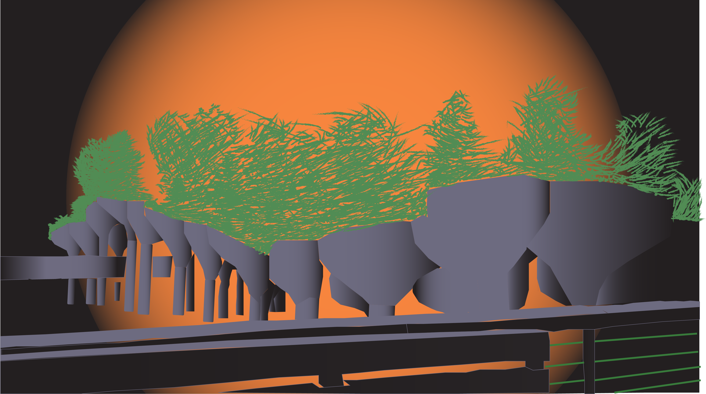

Homework 7
Here is the image I chose for homework: a picture of Little Island and its unique landscape. I believe the landscape's shape is very unique, and it would be interesting to create it in Illustrator. I use shapes to trace the poles and use a pen to trace over the bowl-like shape and the bridges. In addition, with the limitation of 3 colors, I use a gradient for the colors give off a shadow effect shown in the pictures. This shadow helps distinguish the multiple landscapes that are in front and in the back. Furthermore, I use orange with a gradient effect to show off a sunset vibe compared to the gloomy skies in the pictures. I chose to use the paintbrush tool to trace the trees to show off the texture and the motion of the tree from the wind.
Picture

Illustrator

Back to Home